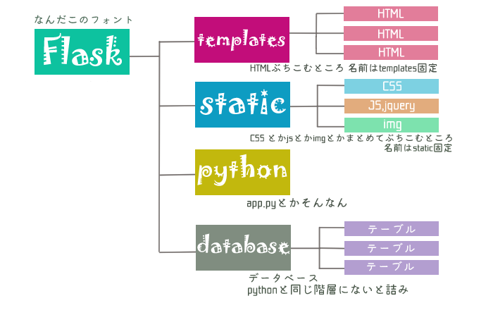

■とりあえず入れとこ
import sqlite3
# 必要なものがあればfromとかimportの後ろにどんどん足してく
from flask import Flask, render_template, request, redirect, session
app = Flask(__name__)
# app.run(debug=True)でデバッガーはオンにしておこう デフォルトだとオフになってるよ
if __name__ == "__main__":
app.run(debug=True)
■基本構造
●python
@app.route('/urlになる部分 任意')
def いい感じの関数名():
処理
return 戻り値
Q.renderとredirectの違いは? A.
こことか読んどいて
●html(ベース)
<!DOCTYPE html>
<html lang="en">
<head>
<meta charset="UTF-8">
<meta name="viewport" content="width={device-width}, initial-scale=1.0">
<meta http-equiv="X-UA-Compatible" content="ie=edge">
<!-- flaskからの相対パスになるので注意 こっから目線で通そうとすると通らない↓ -->
<link rel="stylesheet" href="/static/css/style.css">
<script src="/static/js/jquery-3.4.1.js"></script>
<script type="text/javascript" src="/static/js/common.js"></script>
<title>任意のタイトル</title>
</head>
<body>
<!-- 変わらず毎回表示される場所がこのスペース ヘッダーとか入れとく -->
{% block content %}
<!-- ここにリンクさせた内容(任意のページ.html)が入る -->
{% endblock %}
<!-- 内容増やしたい場合はcontent2とかで括っておけばいけるよ -->
</body>
</html>
●html(他) 黄色いにょろにょろ出るけど赤じゃないなら大丈夫
{% extends "ベースのhtmlのファイル名" %}
{% block content %}
<!-- ここに内容 -->
{% endblock %}
CSSとか他のはいつも通り
■そのまま内容表示
●python
@app.route('/')
def hello_world():
return "Hello World!"
ターミナルで開くと * Running on http://127.0.0.1:5000/ (Press CTRL+C to quit)みたいなのが出てくるから
それ開けばOK urlの末尾/にすると「Hello World!」って表示される
■ワイルドカード urlに打ち込んだ内容使って表示(意外と使う)
●python
@app.route('/user/<name>')
def user(name):
return name+"さん 合掌"
urlに/user/<仏陀>とか入れるといい感じに表示される
■htmlに変数突っ込んで表示させる
●python 変数名は好きなの使っていいよ 今回はnameとageとaddress
@app.route('/temptest')
def temptest():
name = "ち"
age = 23
address = "アメリカ"
# こんな変数使ったやで～って（）の中に一緒に書いて定義しとく↓
# なお(例)name=name の内訳はhtmlで使う方=pythonで宣言してる方
# 例えば下でchi=name って書いてhtml側で{{}}の中にchiって入れとけばちゃんとちって表示される
return render_template("index.html", name=name, age=age, address=address)
●html (今回ファイル名はindex.html)
{% extends "base.html" %}
{% block content %}
<!-- pythonで宣言した変数を{{}}に突っ込んでおいとく -->
<p>名前：{{name}}</p>
<p>年齢：{{age}}</p>
<p>住所：{{address}}</p>
{% endblock %}
実行するといい感じになるよ
■データベースから要素取り出して表示する
●python (usersテーブルからname,age,addressを取り出すよ)
@app.route('/dbtest')
def dbtest():
# データベースに接続↓
conn = sqlite3.connect("flasktest.db(データベースの名前)")
# 中を見る↓
c = conn.cursor()
# SQLを実行する SQL文を書く
c.execute("SELECT name,age,address FROM users WHERE id=1")
# タプル型で格納される
user_info = c.fetchone()
# データベースの接続を終了しなければならない↓
c.close()
return render_template("dbtest.html", user_info=user_info)
fetchall:全部のレコードの結果をもってくる
fetchmany:指定された行数のデータをもってくる
fetchone:１件ずつデータをもってくる
●html (今回ファイル名はdbtest.html)
{% extends "base.html" %}
{% block content %}
<!-- pythonで宣言した変数はタプル型なので{{タプル[インデックス番号]}}で値を取り出せる -->
<p>名前：{{user_info[0]}}</p>
<p>年齢：{{user_info[1]}}</p>
<p>住所：{{user_info[2]}}</p>
{% endblock %}
実行するといい感じになるよ
■データベースから複数のレコードを取り出し表示（繰り返し)
●python (今回はlistって名前のテーブルからtitleとtextって名前のカラムの内容を取り出す)
@app.route('/list_page')
def post_page():
conn = sqlite3.connect('database.db')データベースの名前
c = conn.cursor()
# 必要な情報を取り出すSQL文を書く 今回は5件出すよ↓
c.execute("select title,text FROM list LIMIT 5")
text_list = []
# 辞書型で格納
for row in c.fetchall():
text_list.append({"title":row[0] ,"text":row[1]})
c.close()
return render_template('list_page.html', text_list=text_list)
●html(表示する内容がある限りforでくくった中身の表示を繰り返す list_page.html)
{% extends 'base.html' %}
{% block content %}
{% for item in text_list %}
<!-- {{item["キーの名前"]}}で要素を取り出す -->
<p>{{item["title"]}}</p>
<p>{{item["text"]}}</p>
{% endfor %}
{% endblock %}
実行するといい感じになるよ
■データの入力を受け付ける
●python (listテーブルにtitleとtextを入力)
@app.route('/add_list', methods=["POST"])
def add_post_yeah():
conn = sqlite3.connect('database.db')
c = conn.cursor()
# 入力された値を受け取る requestのインポートを忘れずに(上の方のimportのとこ)
title = request.form.get("title")
text = request.form.get("text")
# ?の数だけ後ろの()に入る物を書くよ
# たとえ？が一つでも後ろの()の中に,を入れてタプル型にするよ（例）(title,)
# 今回は何処にって書かなくてもいいのでVALUESをいきなり書いてOK
c.execute("insert into list values(null,?,?)",(title,text))
# データベースの変更を書き込み
conn.commit()
# 閉じる
c.close()
return redirect("/list_page")
●html (add_list.html 入力受け取れれば何でも良い ひとつ前のlist_pageとかに飛ばすといい感じ)
{% extends "base.html" %}
{% block content %}
<form action="/add_list" method="POST" enctype="multipart/form-data">
<label>タイトル:</label>
<input type="text" size="100" maxlength="100" name="title">
<label>コメント:</label>
<input type="text" size="100" maxlength="100" name="text">
<button type="submit">投稿する</button>
</form>
{% endblock %}
値が入力されたかデータベースで確認してみよう